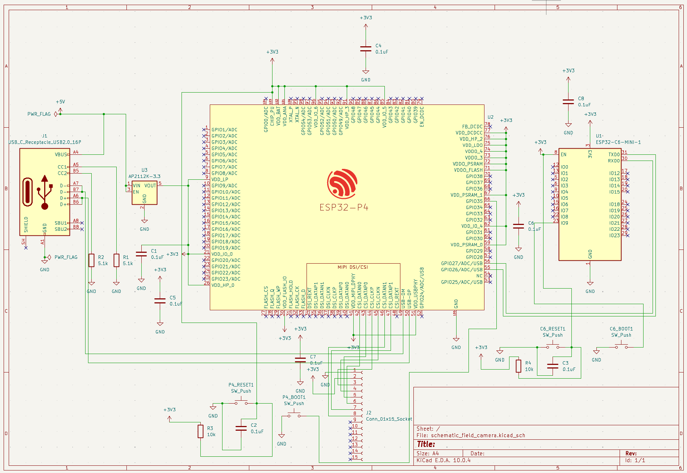
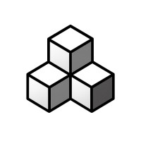
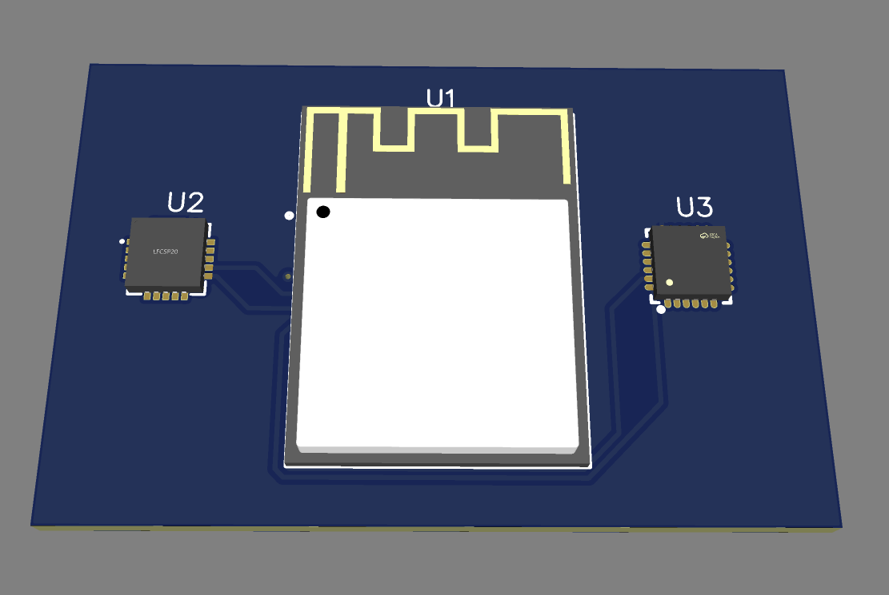
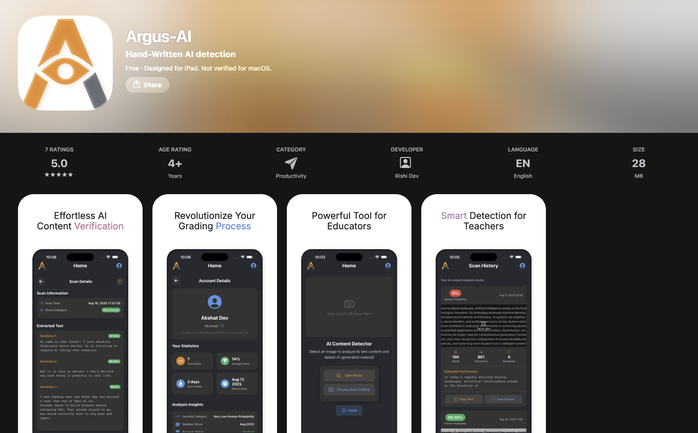
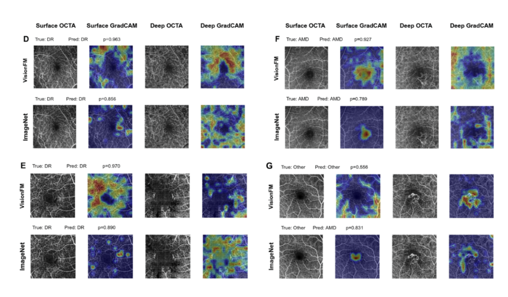
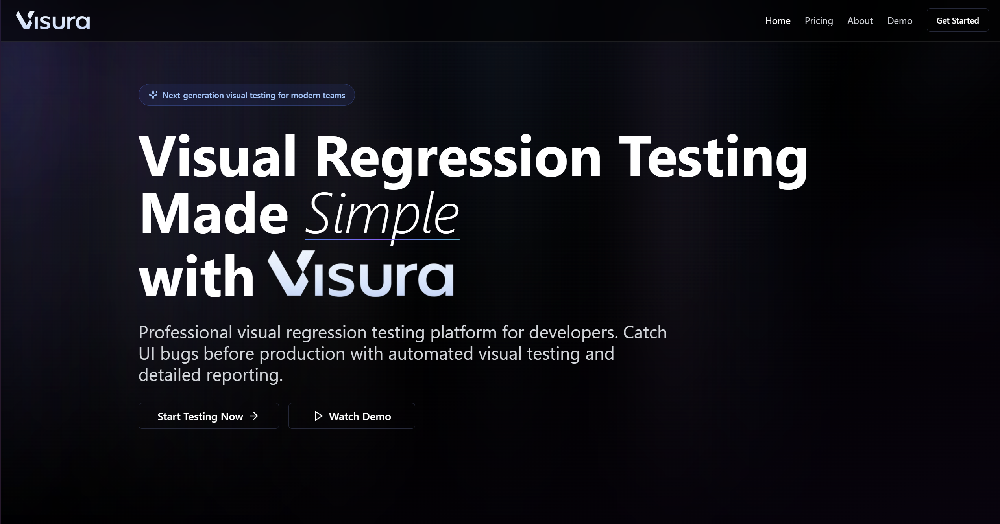

Autonomous solar-powered atmospheric water generator
Awarded 2nd Place globally (top 1% internationally) in the New York Academy of Sciences Global Innovation Challenge. Patent Pending (USPTO App. #63/893,790). Architected and modeled an autonomous, solar-powered mobile AWG robot designed for infrastructure-less environments.
Edge AI & Perception: Modeled a computer vision pipeline utilizing pruned TensorFlow Lite architectures (<150ms latency) and YOLOv8 on an NVIDIA Jetson Xavier NX framework for real-time terrain mapping.
Autonomous Navigation: Designed the system architecture for D* Lite path planning and obstacle clustering utilizing ROS 2 Humble/Micro-ROS specs w/ RPLIDAR A2 and FLIR Lepton thermal arrays.
Compute & Firmware: Developed C++ firmware structures for an STM32 MCU to execute closed-loop control, simulating live DHT22 telemetry to regulate adaptive PWM cooling cycles.
Power Electronics: Detailed a 48V LiFePO4 solar management matrix and electrical schematic featuring ACS712 current tracking and automated load-shedding logic.
Low-power FPGA cardiac monitoring system
Developed under the MIT Beaver Works Summer Institute (MIT BWSI), NanoBeat is a low-power FPGA-based cardiac monitoring system designed to classify ECG signals in real time.
Implemented a hardware-accelerated signal-processing pipeline that extracts Hjorth parameters describing ECG activity, mobility, and complexity before applying K-nearest neighbors classification. The architecture demonstrates how specialized digital logic can support responsive biomedical monitoring while keeping computation and power requirements low.
We documented the design and results in an IEEE paper submitted to the IEEE SPMB Conference, connecting hands-on FPGA development with research in biomedical signal processing.


Wearable edge-compute video hardware
Internship at Schematic, an AI-powered smart glasses startup backed by E14 Ventures and accepted to Y Combinator W26. Architected the Phase 1 Bench Prototype schematic for an ultra-compact, stream-only body-worn video accessory designed for commercial HVAC and facilities technicians.
Dual-MCU Architecture: Designed a sophisticated dual-processor system pairing an ESP32-P4 main processor (MIPI-CSI camera ingestion, ISP, hardware H.264 encoding) with an ESP32-C6 coprocessor (Wi-Fi 6 media transport and BLE 5.3 control). Implemented high-speed UART/SPI inter-MCU communication with power-aware switching.
Ultra-Micro Form Factor: Optimized PCB layout and power delivery for an ultra-compact target envelope (≤42×24×12 mm, ≤30g body badge) while supporting peak transient power >2 W for Wi-Fi and encoder operations from a 3.7–4.1 Wh pouch cell.
Zero-Storage Architecture & Validation: Implemented volatile PSRAM-only design (no persistent media storage) for strict data ownership compliance. Achieved clean ERC validation (0 Errors, 0 Warnings) in KiCad 10.0+ with native 1280×720@24fps H.264 streaming capability.

Dual-sensor infant safety wearable
Developed a dual-sensor infant safety patch correlating AD8232 ECG waveforms with MPU6050 kinematics via FreeRTOS on an ESP32-S3 to flag prone-position sleep anomalies. The system cross-references heart monitor waveforms with accelerometer angles to detect dangerous sleeping positions (like rolling onto the stomach) in real time.
Hardware: Designed a 2-layer FR4 PCB layout using EasyEDA; routed analog signal traces with dual ground plane shielding to block environmental noise. Integrated AD8232 ECG front-end and MPU6050 6-axis IMU with hardwired Lead-Off Detection pins for sensor attachment verification.
Firmware Architecture: Programmed an ESP-IDF framework splitting execution loads across separate FreeRTOS processing cores (Core 0 sampling analog inputs @ 250Hz; Core 1 tracking I2C orientation vectors @ 100Hz). Implemented dual-core task scheduling to prevent sensor latency degradation.
Logic Engine: Coded threshold checks evaluating negative gravity components (Az < -0.70g) against biometric drops to isolate low-latency fault conditions. Triggered high-priority alerts on prone roll detection with heart rate anomaly correlation.

Handwritten AI detection for educators
Argus AI helps teachers review handwritten work and identify writing that may have been generated or assisted by artificial intelligence. The project was featured by KXAN after Round Rock High School students created the app to support classroom integrity.
How it was made: The app uses Google Cloud Vision to process and extract text from a photographed handwritten response, then sends the resulting content through the Winston AI API for AI-generated writing analysis. Results are presented as an understandable signal for educators rather than replacing teacher judgment.
Product delivery: Designed the experience around a fast mobile capture-and-review flow, then packaged and distributed it as an iOS application through the Apple App Store.

Published in the British Journal of Ophthalmology
Peer-reviewed BMJ journal article · Co-author · PMID 42086316 · DOI 10.1136/bjo-2025-329249
This publication studies whether domain-specific foundation models can classify multiple retinal diseases from optical coherence tomography angiography (OCTA) data when labeled datasets are limited.
How it was made: The study used the OCTA-500 dataset, combining superficial and deep retinal projections through intermediate feature fusion. Cross-modal transfer learning transferred knowledge from color fundus photography into OCTA analysis, and VisionFM and RETFound were evaluated against an ImageNet-based vision transformer.
Results: VisionFM with cross-modal transfer learning reached 0.8133 accuracy compared with 0.7600 for the ImageNet baseline, while RETFound reached 0.8000. Saliency maps also localized model attention to anatomically relevant retinal structures.

Product of a ScaleQA software testing internship
Designed and built Visura.dev as a product of my software testing internship at ScaleQA. The platform catches visual UI regressions before they reach production, giving developers a focused workflow for testing real web pages, comparing changes, and understanding exactly what moved between releases.
How it works: Visura establishes a baseline screenshot for a page, runs repeatable visual tests, and compares each new capture against the expected state. Its review and reporting workflow surfaces meaningful differences so teams can investigate layout changes before they become user-facing bugs.
Current status: The Visura website is not currently live. The demo video below walks through the application’s full functionality, including test creation, screenshot comparison, regression review, and reporting.